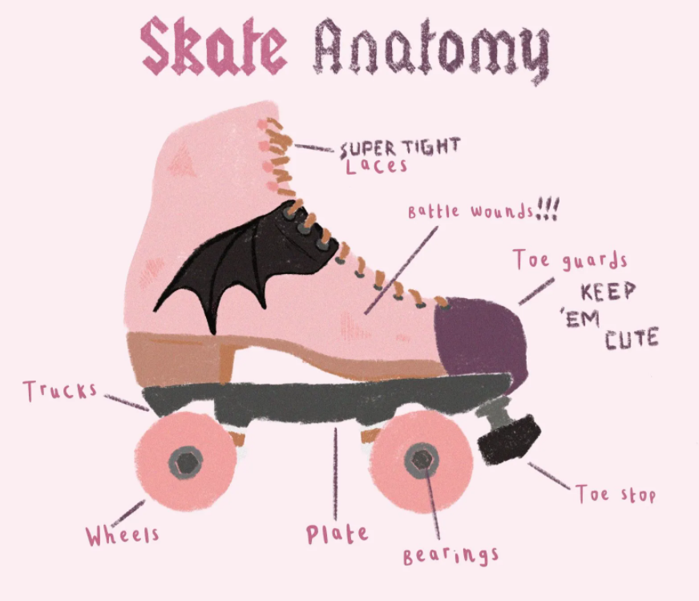

Main Parts of Roller Skates

Boot
The boot is the "sho"e portion of the skate. It supports the foot and ankle. Boots with lower cuts are often made for roller derby or indoor skating. Higher boots are oftentimes made for outdoor skating and provide more support.
Plate
The plate is attached to the bottom of the boot. It connects the boot to the trucks and wheels and plays a major role in how the skate may feel.
Trucks
Trucks, similar to skateboard trucks, are the metal or plastic pieces that hold the wheels in place. They allow the skater to turn and shift direction. Metal trucks will last longer, when looking for good skates its good to look out for them. To have more range, you can loosen your trucks.
Wheels
Wheels can determine speed, grip, and smoothness. Softer wheels are often better for outdoor skating as they absorb the impact from different surfaces. Harder and larger wheels are often used indoors.
Bearings
Bearings fit inside the wheels and help them spin.
Toe Stop
The toe stop is located at the front of the skate and is used for stopping, balance, and some beginner tricks. Some opt to use smaller plugs for different tricks. Some choose to not use plugs at all.
Why These Parts Matter
Understanding the parts of a roller skate helps beginners make better decisions when buying equipment, maintaining their skates, and learning new skills. It also builds confidence because skaters become more familiar with how their movement is supported by the design of the skate.